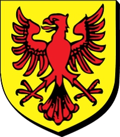

Antavla
769132329 Emma Torta de Pont Audemer
Blev högst 41 år.

Far:
Tourude of Harcourt (950? - 1040)
Mor:
Wevia de Crepon (974 - 1031)
Född:
1018 Bellencombre, Normandie, France.
Död:
1059 Lewes, Sussex, England.
Barn med
769132328 Rudolf de Warenne (1020? - 1074?)
Barn:
William de Warenne (- 1088)
Personhistoria
Årtal
Ålder
Händelse
1018
Födelse 1018 Bellencombre, Normandie, France
1020?
Partnern
769132328 Rudolf de Warenne
föds omkring 1020 Varenne, Normandie, France
1031
Modern
1538264659 Wevia de Crepon
dör 1031 Pont-Audemer, Beaumont, Normandy, Frankrike
[1]
1040
Fadern
1538264658 Tourude of Harcourt
dör 1040 Preaux, Normandie, France
[2]
1059
Död 1059 Lewes, Sussex, England
Källor
[1]
Gautier
[2]
Rootsweb